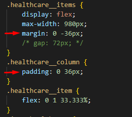
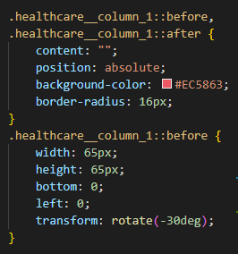
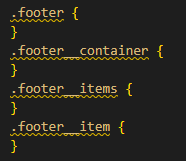
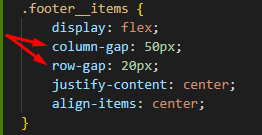

Секция-4
Создание структуры
Завершающий блок назовем healthcare


Сразу сделаем ограничивающий контейнер healthcare__container

Копируем и переносим классы для текстового блока. Здесь нет кнопки и блок полностью отцентрован - добавим модификатор block-text_center, мы по нему отцентруем этот текстовый блок. Также уберем модификатор у заголовка block-text__title_blue, т.к. здесь выделение у нас красным по умолчанию. И перенесем с макета контент

Стилизация текстового блока
Стили текстового блока у нас, собственно, также уже готовы и автоматически применились к этому блоку. Единственное, что - это добавим селектор block-text_center, чтобы отцентровать текст

Здесь хорошо бы было ограничить ширину. Повесим модификатор block-text__text_mw

Соответственно, зададим ширину и выставим текст под заголовком по центру

Нижний отступ от текста до карточек


Карточки. Структура.
Продолжим и сделаем структуру для карточек. Здесь декор я буду делать по примеру прошлого блока, но буду уже использовать псевдо-элементы - это будет еще одним вариантом, чтобы у вас было больше разнообразия.
Сделаем папку "healthcare_img" для иконок и выгрузим их.
Сразу выгружу и иконки для футера "google-play" и "app-store" в общую папку "img", где у нас расположен логотип. Они будут в формате png.
Начинаем атаковать блок с карточками. Здесь я сделаю одинаковые отступы по 30 пикселей слева-справа
Но, для начала, сделаем общий блок для карточек healthcare__items
Внутри будет иконка и контент

Скопируем еще 2 раза и перенесем контент

Структуру мы создали. Можно перенести классы и заверстать

Карточки. Стилизация.
Расположим карточки по горизонтали

Работаем со стилями блоков
Отступ от иконки до текста 58 пикселей


Выставим иконки и текст по центру карточки. А также установим отступы у самого блочка - 17 и 36 пикселей

Расположим карточки равномерно по центру через общую ширину


Для получения отступов между карточками в 72 пикселя мы используем gap


- gap
- Задаёт отступы между столбцами и строками, а не вдоль края контейнера сетки. Является сокращением для свойств row-gap (устанавливает промежуток между рядами) и column-gap (устанавливает промежуток между колонками).
Заголовок

Текст. Тут стоит добавить только высоту строки и межбуквенное расстояние. Также 4 пикселя - расстояние между заголовком и текстом

Что касается использования gap - есть риск, что что-то пойдет не так на одном из браузеров. Поэтому, я покажу еще один вариант. Для этого нам нужно завернуть наши контентные блоки в колонки healthcare__column дополнительно.

Для колонок задаем внутренний боковой отступ в 36 пикселей. gap тогда закомментируем и вместо центрования колонок, в общем блоке задать отрицательный margin для компенсации, И у нас между колонками выставилось расстояние, но сами колонки съехали влево

Чтобы теперь выровнять колонки, мы заберем ограничение по ширине max-width у общего блока healthcare__items, а также заберем ширину у пунктов healthcare__item и передадим ее колонкам healthcare__column. Тогда все опять получается
Но, поскольку в макете у нас и так есть боковые отступы, то мы можем убрать отрицательный боковой margin у общего блока healthcare__items. Тогда мы получим более безопасные отступы, не нарушая картины

Но, gap, мне кажется, уже можно использовать для флексов. Говорю с пониманием того, что на каком-то Safari стареньком, там может не сработать. Если вам по заказу не нужно такое поддерживать, то вы можете gap использовать.
Главные отступы: 79 пикселей сверху и 74 снизу до иконки "Google Play", которая у нас в футере и с учетом декора, снизу сделаем 30 пикселей

Декор
Для декора я добавлю дополнительные классы с модификатором к item-healthcare
Декор-1
На этот раз я буду делать декор псевдоэлементами. Соответственно, стили для первого объекта

И у нас получилось, что декор не выступает за карточки, а позиционируется внутри объекта item-healthcare
Тогда нам надо вешать декор не на сами объекты. Немного вышла заминка с z-index, так что хорошо, что у нас есть колонки healthcare__column, которые мы добавили. Декор будем вешать прямо на них. Вот они нами и пригодились гораздо больше, чем мы думали.
Соответственно, псевдоэлементы, написанные для item-healthcare_1 исправим селекторы и применим для healthcare__column_1. Задаем относительное позиционирование для healthcare__column и сохраняем относительное позиционирование для item-healthcare, чтобы сохранять потоки и декор, чтобы опять не вышел у нас поверх карточки. Тогда все получается, как требуется. Остается только расположить декор, согласно макету

Соответственно, координаты для первого объекта декора
Декор-2
Второй декор тоже к этой колонке привязан. Соответственно, он уже будет задан через ::after
Поскольку у нас есть разделение на элементы, мы можем для item-healthcare добавить z-index: 2 и скрыть декор под карточкой
И он не совпадает с макетом, потому что у него border-radius больше и из-за этого углы схождения дают нам искажения. Поменяем border-radius и уменьшим right. Теперь все получается
Декор-3
Этот декор делаем через ::after, т.к. он у нас идет ПОСЛЕ
Декор-4
Последний декор также делаем через ::after

Все отлично получилось с декором. И перед адаптивом всей этой секции сразу сделаем подвал и все вместе садаптируем.
ПОДВАЛ
Создадим структуру, подгрузим иконки и перенесем классы

Выровняем иконки по центру
Теперь эта корявая картинка создала нам гемморой, потому что она не центруется. А не центруется она потому, что не там я написал стили - нужно не в ограничивающем контейнере выравнивать картинки, а в их контейнере. Поэтому перенесем стили из footer__container в footer__items
Теперь отступы сделаем - 45 пикселей сверху-снизу. И раздвинем картинки через gap

Прием с карточками
Хочу показать работу с карточками. Когда у нас много текста в одной карточке, получается не очень красиво.
Хорошо бы нам это дело "фиксить". Что мы делаем? Мы самим карточкам даем высоту 100%, тем самым подгоняем это дело. Первый вариант у нас был, когда карточка не зависит от другой. В этом варианте - одна карточка завист от другой. Выбираете вариант по ситуации
Адаптив
На первом "breackpoint" мне не нравятся отступы между карточками - они великоваты для этого расширения экрана
@media (max-width: 1087px)
Уменьшим отступы
@media (max-width: 991.98px)
На этом "breackpoint" будет лучше расположить карточки вертикально - так будет лучше
Раздвинем карточки между собой
Уменьшим отступы сверху

Адаптив. Подвал
С карточками у нас все отлично, закончим с подвалом.
@media (max-width: 500px)
Получилось большое расстояние между картинками. Разделю gap, чтобы можно было отдельно задавать расстояние между колонками и рядами
